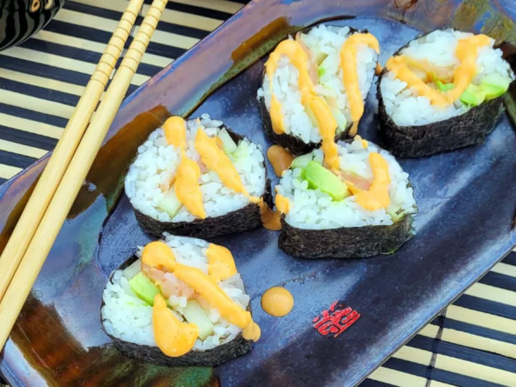

Smoked Salmon Sushi Roll

How to Make Salmon Rolls
You'll find the full, step-by-step recipe below — but here's a brief overview of what you can expect when you make salmon sushi at home
- 2 pounds skinless, boneless chicken breast halves
- 2 teaspoons salt
- 1 tablespoon minced garlic
- Soak rice for 4 hours. Drain rice and cook in a rice cooker with 2 cups of water. Rice must be slightly dry as vinegar will be added later.
- Immediately after rice is cooked, mix in rice wine vinegar; spread rice on a plate until completely cool.
- Place 1 sheet of seaweed on a bamboo mat